Deepnote was opted to be used as this offered easier collaboration options and provided a
‘link’ between 2 notebooks to access the same set of data at any time.
Context of the Sentiments Dataset
Prior to performing the EDA, each tweet was ran through an LLM
(meta-llama/llama-4-maverick-17b-128e-instruct) to perform sentiment analysis in which the
following attributes were determined per tweet,
The mentioned candidate or partylist
The polarity of the tweet, with -1 being negative and 1 being positive, floating point
values accepted, both exclusive
The tone of the tweet which may be
Anger
Contempt
Disgust
Enjoyment
Fear
Sadness
Surprise
Neutral
The ‘Perceived Judgement’ of a user towards their mentioned candidate, which may be either
In favor
Unsure
Opposed to
In the case that multiple candidates were mentioned in a tweet, a list will be returned
containing the corresponding tone, polarity, and judgement per candidate mentioned in that
tweet. The particular model, meta-llama/llama-4-maverick-17b-128e-instruct, was used for its
balance between speed, price, and accuracy based on its benchmarks on analysis (Artificial
Index, 2025).
Hypotheses under Pearson Correlation
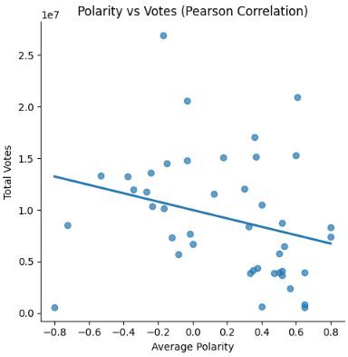
Figure 1. Pearson Correlation of Total Votes in Relation to the Average Polarity of Each
Senatorial Candidate
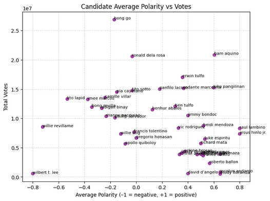
Figure 2. Spearman's Rank Correlation of Total Votes with respect to the Average Polarity of
Each Senatorial Candidate
Null
Social media sentiments have no significant level of influence on the likelihood of being
elected a Candidate during the 2025 Philippine National and Local Elections.
Alternative
Social media sentiments have a significant level of influence on the likelihood of being
elected a Candidate during the 2025 Philippine National and Local Elections.
Conclusion
Pearson correlation coefficient (polarity vs votes): -0.2784966690117171
Spearman correlation coefficient (polarity vs votes): -0.3678864219767173
Which is interpreted as a negative moderate correlation, therefore, we reject the null
hypothesis. (Research Gate, 2018)
Research Questions
How did emotions impact the candidates to be chosen for the elections?
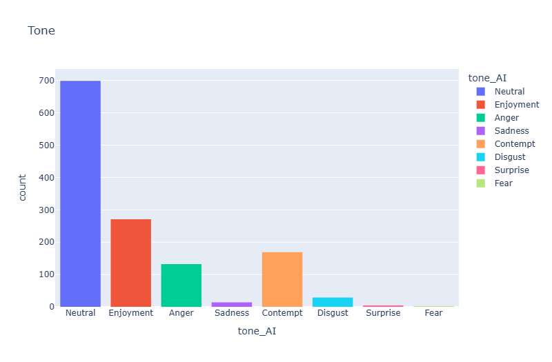
Figure 3. Tone counts across the entire dataset containing the sentiments of each tweet.
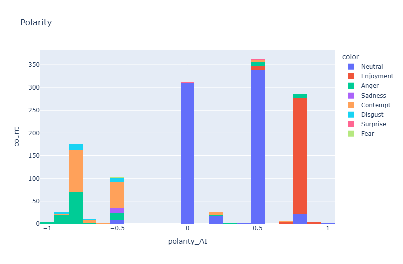
Figure 4. Counts of Polarities across the entire dataset containing the sentiments of each
tweet, colored by the tweet's associated tone.
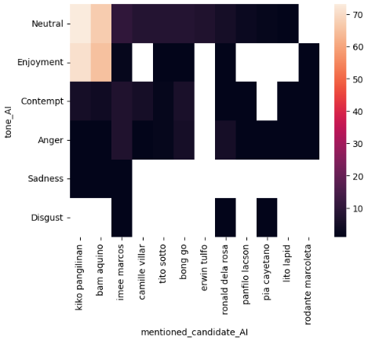
Figure 5. Heatmap of the amount of instances of tone in relation to the subset of winning
senatorial candidates across all tweets.
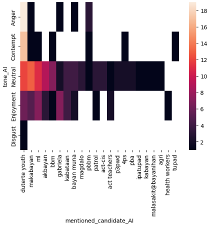
Figure 6. Heatmap of the amount of instances of tone in relation to the partylists mentioned
across all tweets.
What are the critical proponents that shape the decisions of Filipino voters over support for
a candidate?
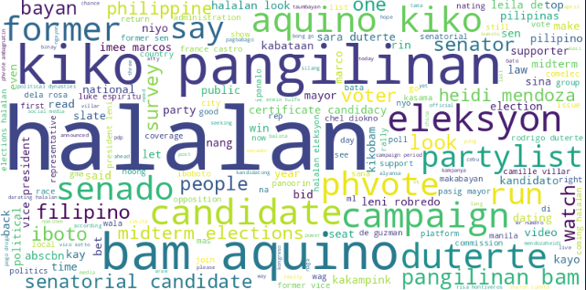
Figure 7. A word cloud of the most mentioned words or phrases across the entire Tweets
Dataset.
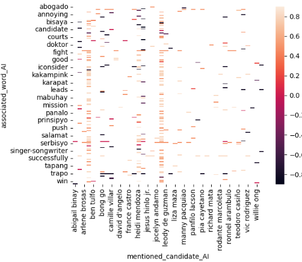
Figure 8. A heatmap of the associated word of a tweet in relation to the mentioned
senatorial candidate, with the heat being the average polarity of a user in the tweet.
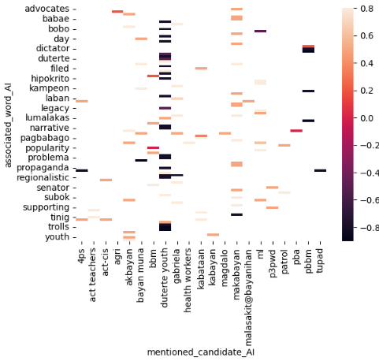
Figure 9. A heatmap of the associated word in a tweet in relation to the mentioned
partylist, with the heat being the polarity of the said tweet.
How much did online social media sentiments influence actions over the elections?
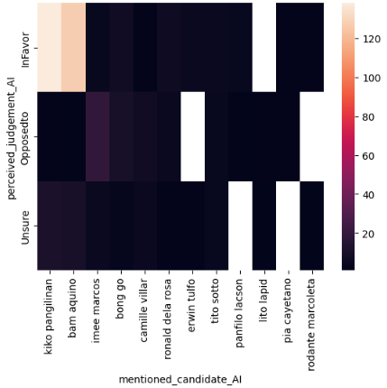
Figure 10. A heatmap of the perceived judgement of a user towards their mentioned senatorial
candidate in a tweet, with the heat being the amount of instances of that judgement per
candidate.
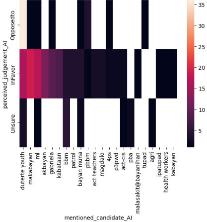
Figure 11. A heatmap of the perceived judgement of a user towards their mentioned partylist
in a tweet, with the heat being the amount of instances of that judgement per candidate.
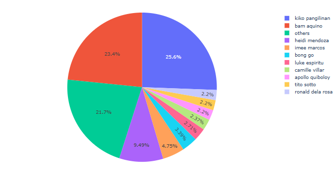
Figure 12. A pie chart showing the percentage of senatorial candidates mentioned in relation
to the dataset (tweets containing mentioning a candidate), ordered by amount, candidates
with less than 3 mentions or past the top 10 are marked as others.
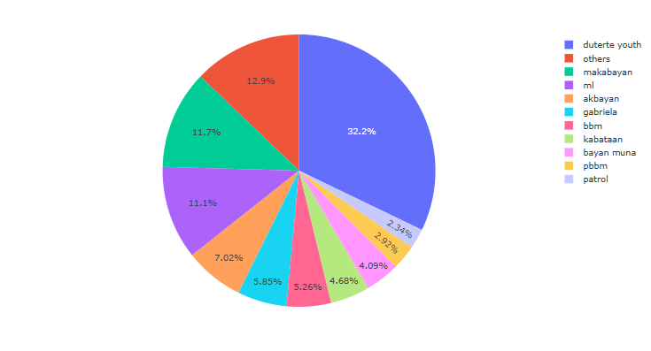
Figure 13. A pie chart showing the percentage of partylists mentioned in relation to the
dataset (tweets containing a mention of a partylist), ordered by amount. With partylists
past the Top 10 being marked as 'others'.
The correlation tests done in the hypothesis testing earlier may also be used for this
research question.
Figure 14. Pearson Correlation of Total Votes in Relation to the Average Polarity of Each
Senatorial CandidateFigure 15. Spearman's Rank Correlation of Total Votes with respect to the Average Polarity
of Each Senatorial Candidate
Are we able to predict the influence of social media on nationwide elections?
Research Gate. (2018). Interpretation of the Pearson's and Spearman's correlation
coefficients. Research Gate.
https://www.researchgate.net/figure/nterpretation-of-the-Pearsons-and-Spearmans-correlation-coefficients_tbl1_326885374